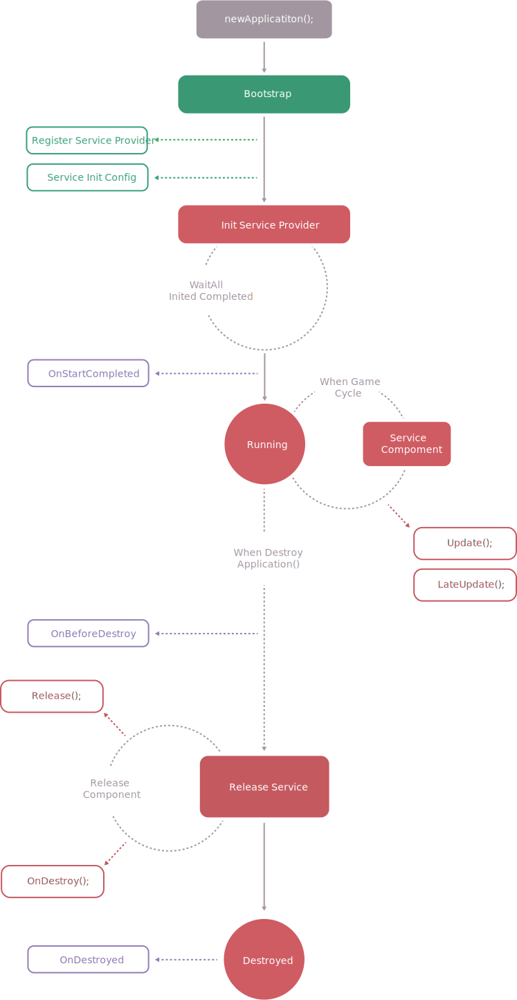

CatLib核心
Application是CatLib程序的核心，也是所谓的程序入口。应用程序通过引导来加载服务提供者和其他一些必须的资源。应用程序在一般情况下只允许启动一个，且只能在主线程中启动。
启动流程
启动引导 -> 初始化 -> 完成
启动引导一般用于加载服务提供者，初始配置或者一些其他资源，在引导过程中请不要通过框架生成任何服务（除非您非常熟悉框架的启动流程），否则您可能使用到一个未经注册的服务。
CatLib生命周期图

配置相关
为服务提供者启动时所需要的初始配置配置,必须在框架启动前完成,这些配置用于在初始化过程中提供数据。
如果您的服务提供者是使用Unity可视化组件构建的，那么您的初始配置可以直接在组件中完成。
从零开始
现在我们将从零开始引导catlib框架启动以便于您能了解框架启动原理，一般情况下完整的CatLib Framework中我们已经帮您写好了引导程序。
首先我们需要定义个一个引导程序，引导程序必须继承自IBootstrap接口，我们可以在引导程序中对服务提供者进行注册或者执行其他引导业务。
|
随后我们需要一个入口程序，用于被Unity挂载并触发启动流程。在入口程序中，我们只需要实例一个CatLib应用程序，并设定对应引导程序（引导程序会根据设置顺序加载）.最后再执行初始化：
注意如果您的使用的是
CatLib.dll会存在构建跨程序集问题，所以您需要提供OnFindType()方法来帮助框架获取当前程序集的类型。
|
从CatLib.Unity开始
除去上文描述的方案外，CatLib已经为开发者准备好了引导程序，在CatLib.Unity项目中您可以通过配置Providers.cs文件来设定框架的服务提供者，通过Configs.cs文件可以设定初始配置，通过Assemblys.cs文件可以设定需要跨域构建的程序集。
CatLib.Unity默认的用户代码入口在Main.cs文件中，当然你也可以同过路由标记来指定启动入口(这需要您删除Main.cs文件,事实上Main.cs的入口也是通过路由完成的)。
通过路由来标记常规配置入口，常规配置的uri固定为bootstrap://config
通过路由来标记启动入口,入口的uri固定为bootstrap://start：
|
判断当前线程是否在主线程中
您可以通过IsMainThread来判断是否处于主线程中。
|
优先级
CatLib基础支持库提供了优先级特性。您可以使用[Priority()]特性来定义优先级。通过App.GetPriorities()方法来获取您为类，函数定义的优先级。
在CatLib中优先级值越小越优先。
全局事件
CatLib核心提供的全局事件系统，您只需要通过简单的API就可以调用。
触发全局事件
|
监听全局事件
监听全局事件时允许您传入触发次数，如果您没有传入则表示事件一直有效，反正如果达到触发，则事件自动被撤销。
更多CatLib事件系统特性请参考事件系统
|
撤销监听全局事件
|
获取程序内运行时唯一Id
您可以从CatLib核心中申请一个运行时Id，这个Id将在CatLib生命周期内唯一。
|
获取CatLib版本号
您可以通过Version获取当前CatLib核心版本号，CatLib的版本号遵循Semver规范。
|